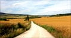

더보기
아래 편집판에 대해 의견주시면옴부즈맨의 자료로 활용됩니다.
'갤S2' 이달 출격 "아이폰탓 허둥댈 일 끝" 머니투데이
위 편집판에 대해 의견주시면옴부즈맨의 자료로 활용됩니다.
잠시 후에 다시 시도해주세요.
로그인 후My캐스트를이용해보세요.
생활의 발견No.884
한국 첫 커피, 여기서
머리까지 깜찍 폭발
'건강한 걷기' 이렇게
문득 떠나고 싶다면
김천 지례 흑돼지 팔도식후경 차지고 고소한 비계와 살 귀한 전통 흑돼지
황당한 첫 데이트 <좋은생각> 에세이 극한의 상황에서 들려온 한마디, "사귀자."
 스페인 카미노데산티아고 세계의 걷고 싶은 길 삶의 흐름을 바꾸다
샤를 보들레르 프랑스의 천재 시인 [악의 꽃]의 작가 보들레르 탄생 190주년
2011.04.09
 편집
편집

 김천 지례 흑돼지
김천 지례 흑돼지